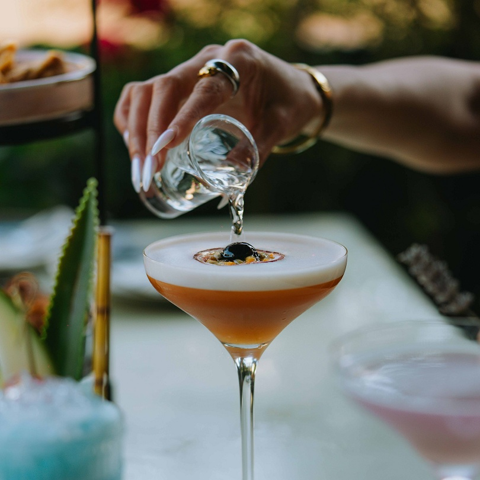
COCTELERÍA
En Jumbo Los Ángeles
La coctelería es el arte de crear distintas preparaciones mezclando variadas bebidas, sabores, colores y aromas con el fin de crear experiencias únicas y momentos inolvidables. Cada trago logra reflejar las habilidades, técnicas y creatividad de quien lo prepara, aún si estamos hablando de un profesional sirviendo a una barra repleta de personas durante toda una noche, o a una aficionada luciendo sus mejores recetas con su grupo de amigos y amigas una tarde de primavera.
En Jumbo Los Ángeles hemos creado este catálogo reuniendo una selección de preparaciones que abarcan desde los clásicos más apreciados hasta propuestas más contemporáneas para explorar nuevos sabores. Su objetivo es ser de acompañamiento para todos los amantes de la coctelería que buscan nutrir sus conocimientos y ampliar su repertorio.
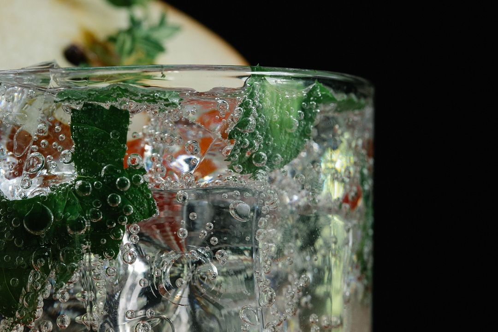
Ginebra
Si la vida te da limones, prepara un Gin-Tonic
El gin es una bebida alcohólica destilada con una graduación de entre 38% y 47%. Su ingrediente principal y obligatorio es el enebro, cuyas bayas le dan su sabor herbal y seco característico, combinado con otros botánicos como hierbas, especias y cítricos.
La ginebra contemporánea se produce de diferentes maneras, a partir de una amplia gama de ingredientes herbales, dando lugar a una serie de estilos y marcas distintas. Después del enebro, la ginebra tiende a ser aromatizada con botánicos / herbales, de especias, flores o frutas o, a menudo, una combinación de estos. Se consume con más frecuencia en mezcla con agua tónica.
Gin Tonic
Un clásico insigne de las preparaciones con ginebra, ideal para refrescarse sin invertir mucho tiempo, ya que no requiere una gran elaboración ni muchos ingredientes.
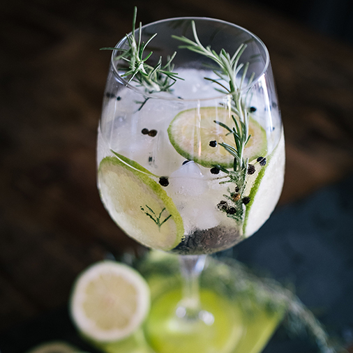
Ingredientes
- 2 onzas (60ml) de ginebra.
- 4-5 onzas (120-150ml) de agua tónica.
- Hielo en cubos grandes.
- Rodajas de limón, pepino o lima para decoración.
Preparación
- Llena una copa globo con mucho hielo. Revuelve unos segundos para enfriar el cristal y descarta el exceso de agua.
- Vierte la ginebra sobre el hielo.
- Inclina un poco la copa y añade la tónica muy despacio cerca del hielo para no romper el gas.
- Da un único y suave movimiento con una cuchara de bar de abajo hacia arriba para unir los sabores sin perder las burbujas.
- Agrega una rodaja de fruta en la superficie.
Ginsecco
Sí, el gin combina muy bien con el espumante (idealmente el Prosecco, el cual le da el nombre a esta preparación, pero por conveniencia podemos utilizar cualquier espumante brut), y esa es la base para un cóctel simple que sabe muy bien y ayuda a combatir el calor de la primavera y el verano, con ingredientes de temporada.
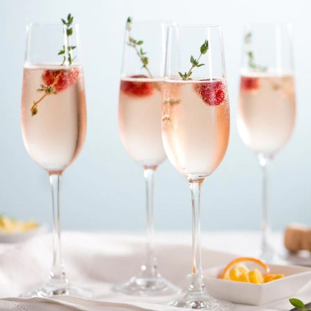
Ingredientes
- 1/2 onza (15ml) de ginebra.
- 1 onza (30ml) de jugo de limón.
- 3 y 1/2 onzas (105ml) de espumante.
- Frambuesas o cítricos para decoración.
Preparación
- Enfría una copa de champaña o tipo flauta en el congelador por unos minutos.
- Sirve la medida de gin y el jugo de limón en la copa.
- Vierte suavemente el espumante.
- Mueve con suavidad y decora con las frutas.
Chill & Tonic
Este cóctel es una versión herbal y un poco más elaborada del gin & tonic, pues se caracteriza por su simpleza. Ideal para disfrutar durante toda la tarde, gracias a sus notas herbales, frescas y cítricas.
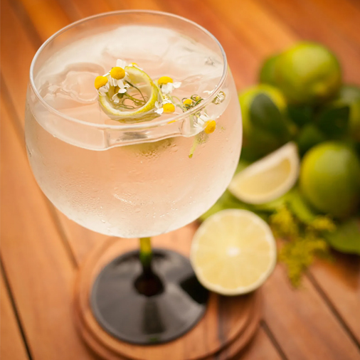
Ingredientes
- 1 onza (30ml) de Tanqueray Nº 10 infusionado con flores relajantes
- 1/3 onza (10ml) vermú blanco
- 2 onzas (60ml) agua tónica
- 5g flores relajantes (manzanilla, lavanda y/o azafrán)
- Cubos de hielo a gusto
- 1 twist de limón verde
- Copa Old fashioned
Preparación
- Vaciar el Tanqueray en un recipiente, agregando los 5g de flores
- Dejar reposar e infusionar de 3 a 5 minutos
- Colar en copa old fashioned con el cubo de hielo
- Agregar 10 ml de vermú
- Revolver
- Agregar el agua tónica
- Decora con twist de limón verde y flores de manzanilla
Gin & tea
El té Earl Gray tiene un sabor que complementa bien al del Gin, y es una buena alternativa para el gin tonic.
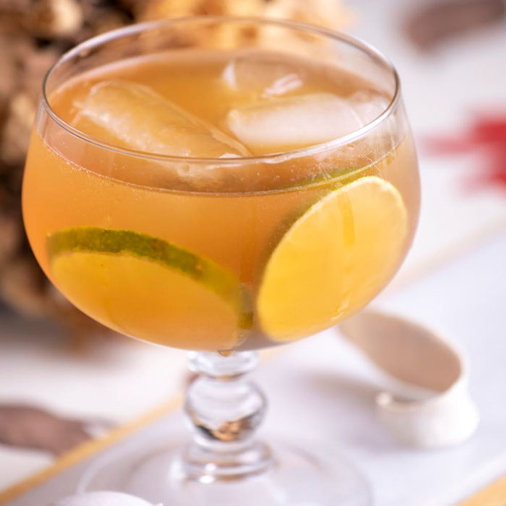
Ingredientes
- 2 onzas (60ml) ginebra.
- 2 onzas (60ml) de té Earl Grey, recién hecho y refrigerado.
- 1 chorrito de jugo de limón.
- 1 cucharadita de azúcar granulada, al gusto.
- Rodajas de limón para decorar.
- Hielo.
Preparación
- Sirve hielo en un vaso de Old Fashioned, sirve el té, el gin, el limón y azúcar.
- Revuelve hasta incorporar y decora con una rodaja de limón.
Gimlet
Este cóctel clásico se prepara rápidamente y lleva pocos ingredientes que combinan muy bien.
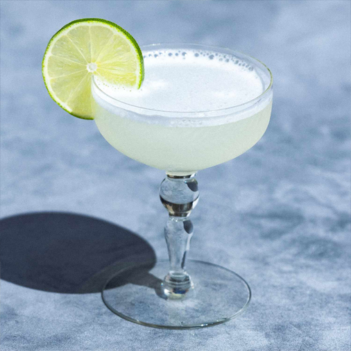
Ingredientes
- 2 onzas (60ml) de ginebra.
- 2 cucharadas de jugo de limón fresco.
- 1 a 2 cucharadas de jarabe simple o goma.
- Hielo.
- Rodajas de limón para decorar.
Preparación
- Combina el gin, el jugo de limón y el jarabe simple de miel en una copa mezcladora. Agrega hielo, cubre y agita durante 15 segundos, o hasta que la mezcla se enfríe.
- Cuela y sirve en una copa de cóctel fría, con una rodaja de limón para decorar.
Floradora
Este es un cóctel olvidado que nació en el mundo de Broadway. Es dulce, pero no demasiado.
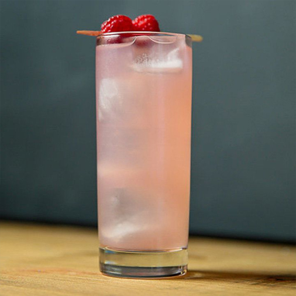
Ingredientes
- 2 onzas (60ml) de ginebra.
- 2 onzas (60ml) de jugo de limón fresco.
- 1 onza (30ml) de licor o jugo de frambuesa.
- 4 onzas (120ml) de ginger ale.
- Rodajas de limón para decorar.
- Hielo.
Preparación
- Sirve el gin, el jugo de limón y el jugo de frambuesa en un vaso alto lleno de hielo.
- Termina de llenar el vaso con la ginger ale.
- Decora con una rodaja de limón.
Corpse Reviver N°2
El Corpse Reviver No. 2 es una bebida clásica que pertenece a una familia de cócteles anteriores a la Ley Seca que, según se decía, fueron creados y consumidos con el propósito principal de resucitar al bebedor; en otras palabras, estaban destinados a curar la resaca, aumentar el vigor y, en general, mejorar la mañana.
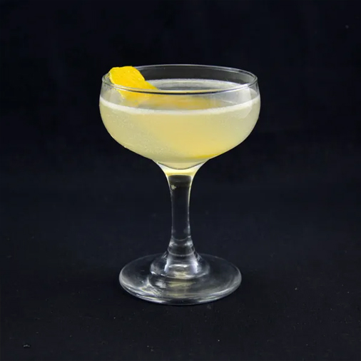
Ingredientes
- 1 onza (30ml) de ginebra.
- 1 onza (30ml) de vermú seco.
- Unas gotas de absenta (para enjuagar el vaso).
- 1/2 onza (15ml) de jugo de limón recién exprimido.
- 1 onzas(30ml) de triple sec o jugo de naranja.
- Cáscara de naranja para decorar.
- Hielo.
Preparación
- Enjuaga la copa de cóctel fría con la absenta y elimina el exceso.
- Coloca los ingredientes en una coctelera con hielo y agita bien.
- Cuela en la copa y adorna con cascara de naranja.
Pasión & Tonic
Un cóctel tropical con notas cítricas dulces. Ideal para arrancar la tarde como cóctel de bienvenida refrescante y con sabores interesantes, una gran opción para dejar de pensar en el trabajo y disfrutar de un momento de relajación y goce.
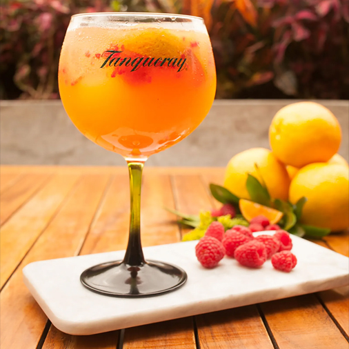
Ingredientes
- 1 y 1/2 onzas (45ml) de ginebra.
- 1 onza (30ml) pulpa de maracuyá.
- 1/2 mandarina o naranja en supremas (depende de la temporada)
- 2g de cardamomo
- 2 onzas (60ml) de agua tónica
- Hielo
- 5 frambuesas para decoración.
Preparación
- Enjuaga la copa de cóctel fría con la absenta y elimina el exceso.
- Coloca los ingredientes en una coctelera con hielo y agita bien.
- Cuela en la copa y adorna con cascara de naranja.
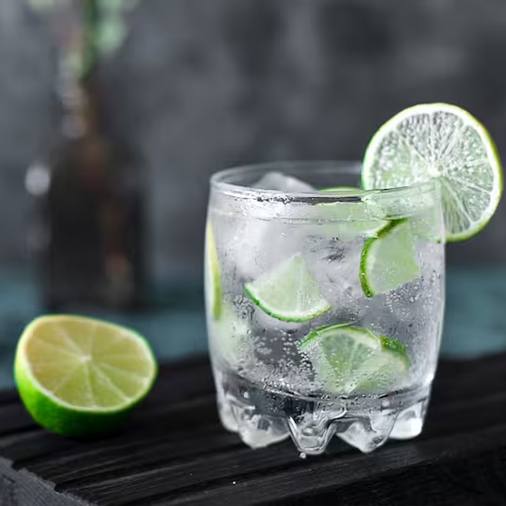
Vodka
"Confía en mí, eres un excelente bailarín" - Vodka
El vodka es una bebida alcohólica destilada y transparente originaria de Europa del Este (con Rusia y Polonia como principales exponentes). Se elabora fermentando granos como el trigo o el centeno, o tubérculos como la papa. Posee un perfil de sabor neutro y cerca de un 40% de graduación alcohólica.
Hay una gran variedad de formas de disfrutar del vodka, y como con cualquier tipo de alcohol, es importante tener en cuenta sus propios hábitos de consumo y establecer qué tipo de vodka le gusta beber. Dado que muchos vodkas se elaboran a partir de distintos cultivos, es probable que encuentres una gran variedad para elegir. A continuación te ofrecemos algunas sugerencias sobre cómo beber vodka.
Ruso Blanco
El ruso blanco es un cóctel exquisito y sorprendentemente fácil de preparar. Esta bebida, que gusta a todo el mundo, resulta una deliciosa alternativa a los batidos para adultos, siendo prácticamente un postre en vaso.
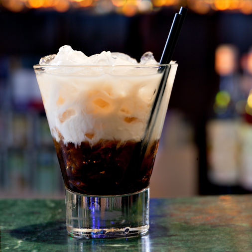
Ingredientes
- 1 onza (30ml) de vodka.
- 1 onza (30ml) de licor de café.
- 1 onza (30ml) de crema de leche o leche evaporada.
- Hielo en cubos.
Preparación
- En un vaso, poner hielo a gusto.
- Agregar el licor de café y vodka, luego mezclar para integrar.
- Verter la crema de leche. Tradicionalmente, se deja que la crema quede por encima de la preparación, pero opcionalmente se puede mezclar todo el contenido para que la crema quede integrada.